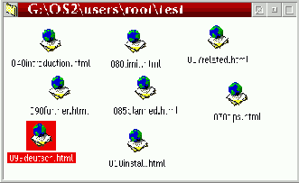

Diese Funktion ist ein wenig schwierig zu erl„utern; stellen Sie sich
einen Ordner vor, dessen Objekte ziemlich durcheinandergeraten sind: wie
oft haben Sie schon versucht, diese Objekte neben- oder untereinander anzuordnen?

Das Men "Anordnen" hilft hier nicht viel, weil es den gesamten Ordnerinhalt
neu anordnet. Stellen Sie sich nun ein unsichtbares Netz von Gitterlinien mit
gleichm„áigem Abstand ber den gesamten Ordnerhintergrund vor,
welches die Symbole "anzieht", wenn Sie "Am Gitter ausrichten" ausw„hlen:
Der Menpunkt "Am Gitter ausrichten" ist im Ordnerkontextmen nur unter den folgenden Voraussetzungen sichtbar:
Hinweis: Mit V0.81 hat sich das Verhalten dieser Funktion ein wenig
ge„ndert. Standardm„áig bewegt XFolder jetzt nur die momentan
ausgew„hlten Objekte. Wenn Sie jedoch die Umschalt-Taste
gedrckt halten, w„hrend Sie den Menpunkt "Am Gitter ausrichten"
ausw„hlen, werden alle Objekte bewegt (so wie frher).